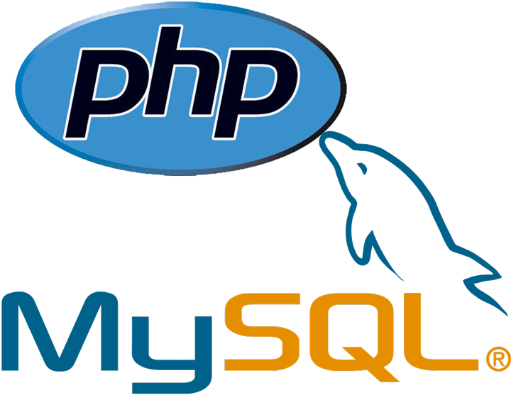
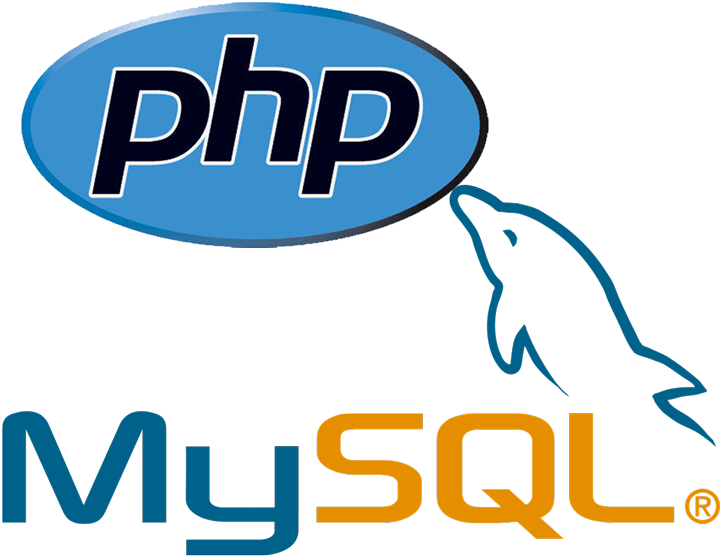

La cybersécurité fait référence à l'ensemble des pratiques, technologies et mesures mises en place pour protéger les systèmes informatiques, les réseaux, les programmes et les données contre les attaques, les dommages ou les accès non autorisés. Cela implique la prévention, la détection et la réponse aux menaces qui peuvent compromettre la confidentialité, l'intégrité et la disponibilité des données et des systèmes informatiques. La cybersécurité est devenue essentielle pour protéger les entreprises, les gouvernements et les utilisateurs individuels contre les cyberattaques de plus en plus sophistiquées.
-
Outils de veille :
- Google Alerts
- Talkwalker
- Feedly
- Twitter
- Reddit
-
Un exemple de risque / attaque
Un exemple d'attaque courante est l'attaque par hameçonnage (phishing), qui consiste à envoyer des emails ou des messages frauduleux pour inciter les destinataires à divulguer des informations sensibles telles que des mots de passe ou des numéros de carte de crédit. Les attaquants peuvent également utiliser des logiciels malveillants pour infecter les ordinateurs des victimes, voler des informations personnelles, ou prendre le contrôle de leurs systèmes.
Le rapport du CERT-FR (Centre d'Expertise Gouvernemental de Réponse et de Traitement des Attaques informatiques) de 2020 intitulé "Analyse de la campagne d’attaque informatique visant le groupe hospitalier Paris Saint-Joseph" décrit une attaque sophistiquée menée contre un hôpital parisien en 2020. Les attaquants ont utilisé une variété de techniques pour infiltrer les systèmes de l'hôpital et chiffrer les données sensibles, exigeant une rançon pour leur restitution. Cette attaque illustre les risques de plus en plus complexes auxquels sont confrontées les organisations et les entreprises en matière de cybersécurité.
LE RANÇONGICIEL RYUK
Comment s'en protéger
Pour se protéger contre les attaques informatiques, il est recommandé de suivre les meilleures pratiques de cybersécurité, telles que :
- Utiliser des mots de passe forts et uniques pour chaque compte
- Mettre à jour régulièrement les logiciels et les systèmes d'exploitation
- Installer des antivirus et des pare-feux pour protéger contre les logiciels malveillants
- Sensibiliser les employés à la sécurité informatique et les former à reconnaître les attaques d'hameçonnage et autres techniques de phishing
- Sauvegarder régulièrement les données importantes sur des supports de stockage externes
- Utiliser des technologies de chiffrement pour protéger les données sensibles en transit ou en stockage
- Il est également recommandé de suivre les actualités en matière de cybersécurité et de mettre en place une veille informatique pour être informé des dernières menaces et des meilleures pratiques pour s'en protéger.


 
